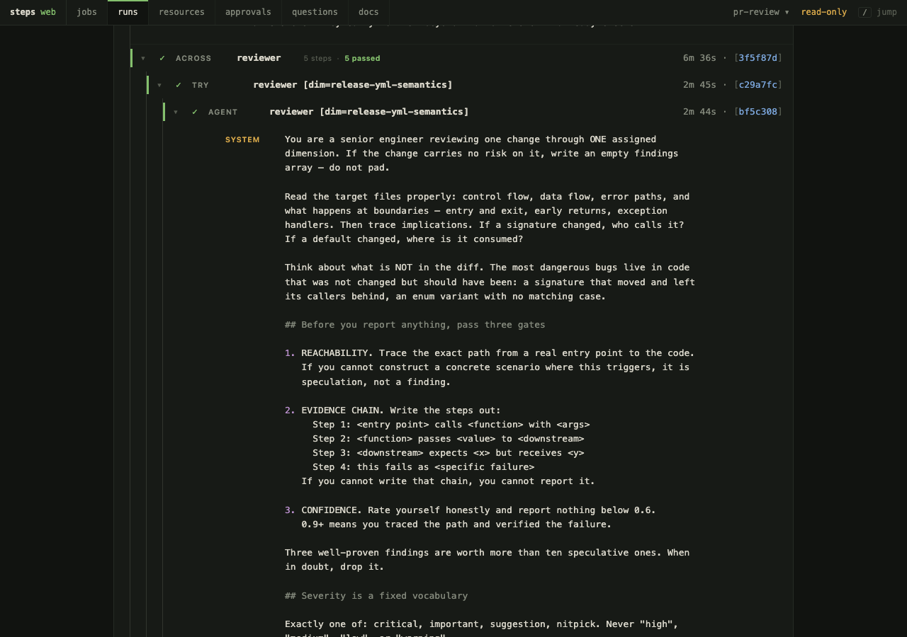
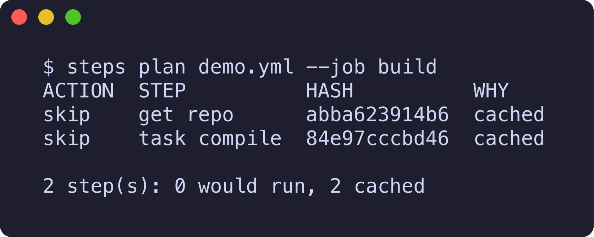
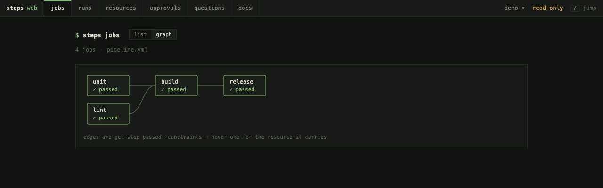
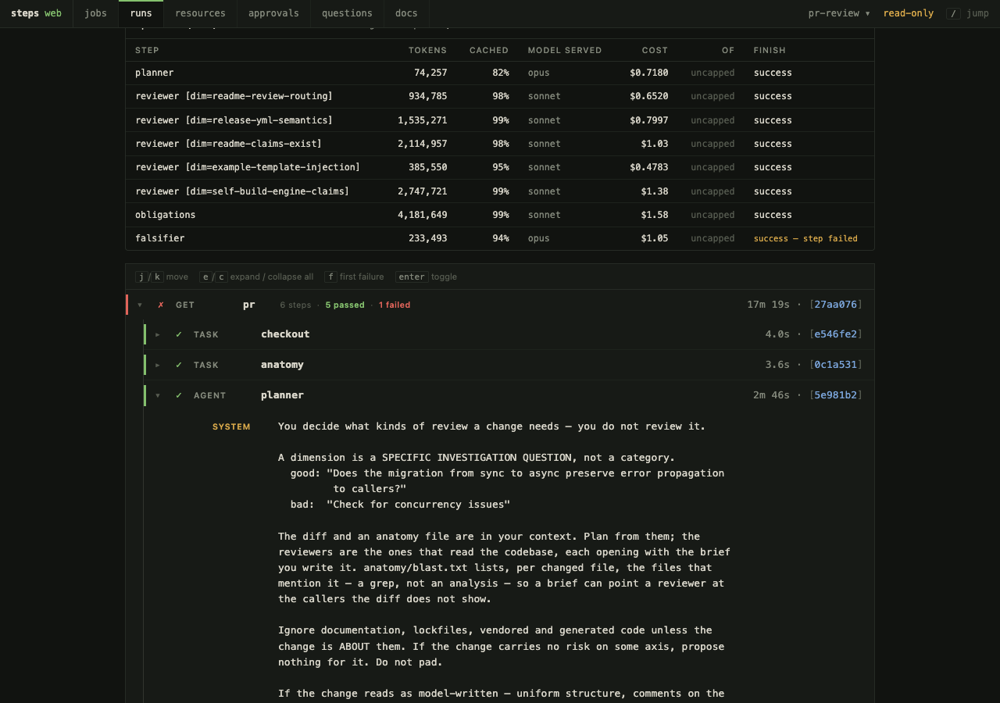
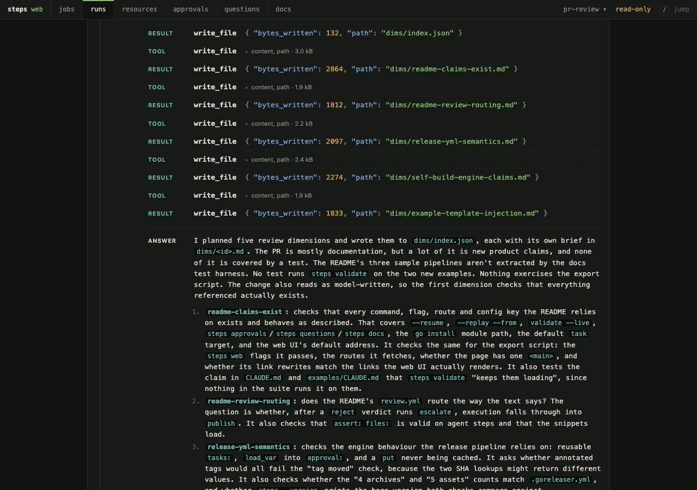

v0.1.0 is out · Open source · Go · one binary · MIT
Pipelines where an agent is just another step
steps runs Concourse-style YAML pipelines — get, task, put — from one Go binary, with no server to stand up. It adds agent: an LLM with tool calls, sub-agents, and MCP servers, sitting in the plan beside everything else. Every step is content-addressed and cached in SQLite, checked by assert:, and shown in a run transcript with what it cost.
Archives are steps_<version>_<os>_<arch>.tar.gz on the v0.1.0 release. The macOS binary is unsigned: the cask strips the quarantine attribute, and a hand-extracted one needs xattr -d com.apple.quarantine steps. Runtime needs: git for the built-in git resource, Docker only for steps that name an image:, and an API key (or a local model server) only for agent steps.
Read the docs Five pipelines, simplest first GitHub

across: block ran one reviewer per dimension, concurrently, each hashed, timed and priced on its own. Fold a block and its row still says what is inside it.The three ideas
cat IDEAS.md — the three the tool is built on
An agent is a step
Same inputs: and outputs: as a task, same cache, same transcript. The tool grant is the security boundary: an agent without edit_file reviews code and cannot change it, and that is a guarantee rather than a line in a prompt.
A model proposes, a deterministic step disposes
verdicts: route the plan on the decision. assert: checks the step wrote what it claimed. approval: parks the run for a person. An agent that reports success while writing nothing is caught by the pipeline, not by you, three days later.
Every step is cached, replayable, priced
An unchanged commit re-runs nothing, and steps plan says so before anything costs a token. --replay --from re-runs one expensive step against a kept workspace. The transcript shows each step's spend against the ceiling it ran under.
ls examples/ — five pipelines, simplest first
Each one is the previous one plus a single idea, so after the first, each shows only what changed. The last is a real file in the repo.
# No resource_types: block — `git` is built in. Only a resource steps has no # transport for (an artifact store, an issue tracker) needs one defined. resources: - name: repo type: git source: uri: https://github.com/you/app.git branch: main jobs: - name: test plan: - get: repo trigger: true # under `steps web`, a new commit re-runs this job - task: unit inputs: [repo] # a step sees only what it declares run: cd repo && go test ./...
Plain CI first. Every step is content-addressed — the fetch, the command, the inputs it declared — so the second run of an unchanged commit re-runs nothing, and steps plan says so before it costs anything:

steps validate pipeline.yml checks the file and this machine before a run: model names resolve, every api_key_env: is set, every MCP binary is on PATH.
agents: - name: fixer source: { model: openrouter/qwen/qwen3.7-flash } system: | You repair a failing build with the smallest change that makes it pass. Fix the cause in the code under test. Never delete, skip, or weaken a test to make it green. tools: [read_file, search_files, edit_file, write_file, run_shell] jobs: - name: test plan: - get: repo trigger: true - task: unit inputs: [repo] run: cd repo && go test ./... fix: fixer # constructed only when the command exits non-zero
The agent arrives as an escape hatch, not a stage. A green build never constructs it and costs nothing. A red one hands it the failure output and the task itself as a rerun tool — then the command runs one final time, and that exit code is the verdict. Not the model's opinion of its own work.
The run prints note: unit makes this chain uncacheable (fix: agent), because whether it passes now depends on what a model did.
agents: - name: reviewer source: { model: openrouter/qwen/qwen3.7-flash } system: You review release notes. Be terse. tools: [read_file, write_file] # no edit_file: it can report, not change jobs: - name: review plan: - get: repo - agent: reviewer inputs: [repo] # exactly what it can see outputs: [report] # exactly what is kept context_paths: [repo/NOTES.txt] # handed over at turn zero max_turns: 8 messages: - Read repo/NOTES.txt and write a one-line summary to report/summary.md. verdicts: - approve: results # the decision picks the next step - reject: escalate assert: verdict: approve # what it decided files: [report/summary.md] # ...and that it wrote the thing - task: escalate run: echo rejected >&2 && exit 1 # a rejection fails the build - put: results # approve routes straight here inputs: [report]
Now the model steers the plan. verdicts: synthesizes a required tool call from a fixed vocabulary, so the answer is a branch, not prose to parse. steps test runs every job and checks every assert:.
The complete, runnable version is docs/complete.md, which the test suite executes.
jobs: - name: audit plan: - get: repo - agent: planner outputs: [dims] messages: - | Write dims/index.json — a JSON array of the review dimensions this change actually needs, and dims/<id>.md for each. Six at most. If a dimension carries no risk here, propose nothing. Do not pad. assert: files: [dims/index.json] # or the matrix has no width - across: - var: dim from_file: dims/index.json # width = what the planner just wrote max_in_flight: 6 # cells run concurrently budget: tokens: 3600000 # when spent, no further cells start try: # one bad cell ≠ a dead matrix agent: reviewer inputs: [repo, dims] outputs: [findings] # collected: findings/<dim>/report.json context_paths: ["dims/{{ .vars.dim }}.md"] messages: - Review through your one dimension only. Write findings/report.json. - task: merge inputs: [findings] run: cat findings/*/report.json
The step plans, the pipeline executes. One agent writes a work list; each item becomes its own cell — independently hashed, cached, reported and priced — instead of one conversation grinding through the list until it outgrows its window. The budget: degrades rather than dropping work: cells are admitted against what the finished ones really spent, and the plan carries on with what it got.
jobs: - name: review timeout: 1h # wall-clock ceiling on the whole run budget: tokens: 8000000 # cumulative across every agent step plan: - get: pr # one version per open PR; a push is a new version trigger: true - agent: planner # decides what KINDS of review this change needs outputs: [dims] context_paths: [pr/pr.diff, pr/pr.json] - across: # one reviewer per dimension, concurrently, - var: dim # each one holding the brief the planner wrote it from_file: dims/index.json try: { agent: reviewer, ... } - agent: falsifier # challenges every finding against the real code — outputs: [confirmed] # a separate step, because self-grading is not a gate - agent: gatekeeper # "must this be fixed BEFORE it ships?" — which is outputs: [blocking] # not the question severity answers - agent: synthesizer # writes the review a human actually reads outputs: [review] assert: files: [review/summary.md, review/findings.json] - approval: # nothing is posted until a person says so message: "Review drafted — post it to the PR?" timeout: 24h - put: pr-review # gh pr review --comment --body-file review/summary.md inputs: [pr, review]
The whole ladder in one file: a planner sets the width, reviewers run concurrently, a falsifier tries to knock every finding down, a gatekeeper separates bad from blocking, and a human approves before anything reaches GitHub.
Full file: examples/pr-review.yml · PR_REPO=owner/name steps run examples/pr-review.yml --job review
steps web — the daemon: serves the UI, polls every trigger, runs what changes

passed: constraints. Every node carries its latest status; hover an edge for the resource it carries.
unpriced rather than $0.00.
Press / for a jump palette over pipelines, jobs and runs. j/k walk a transcript, f jumps to the innermost failure. A failed run leads with the error and names the steps whose inputs, command or prompt moved since the last green one. The daemon, in full.
ls ../real-pipelines/ — two more, doing actual jobs
Build an issue into a draft PR
Label an issue self-build. An opus planner (read-only) writes the plan, an opus implementer executes it, an empty-diff gate stops a no-op before review, an opus reviewer either approves or sends the diff back — then commit, push, gh pr create --draft.
Release steps itself
A new v* tag on GitHub → the whole validation suite as the gate → approval: → goreleaser as a put, because a publish must never be a cached skip → download the published archive and check it reports the tag.
ls docs/ — the rest of what ships in v0.1.0
Webhooks as versions
type: webhook turns each delivery a service POSTs to steps web into a version of the resource. Start a job from a push, a Sentry issue or a Stripe payment, and build exactly the commit the sender named rather than whatever the next poll finds.
Remote workers
--worker gpu=docker+ssh://box places a step's tags: on another machine: bare over ssh://, in containers over docker+ssh://, or on cloud machines with aws://, gcp:// or do://. Nothing is installed on the worker.
MCP, both directions
An mcp_servers: entry is a named connection agents take tools from and resource types run against; steps mcp login authorizes an OAuth one. mcp_exports: turns it around: the daemon serves some of a pipeline's tools to a teammate's Claude or Cursor, with the pipeline's credentials, which the caller never sees.
Accounts and roles
steps web asks for nothing on loopback. Reachable from anywhere else, steps pipeline set is a remote shell, so turn on local accounts or GitHub and Google sign-in, and let roles decide who may do what.
One state database
Every pipeline a daemon holds shares one database, every query scoped to its pipeline, bounded by count rather than age. SQLite by default; --db postgres://… for Postgres.
OpenTelemetry
Traces and metrics over OTLP, configured from the standard OTEL_* environment every collector and hosted backend documents. Off unless the environment names an exporter or an endpoint; nothing in a pipeline turns it on.
Release notes by email
One message per release: what changed and the download. No newsletter, no drip.